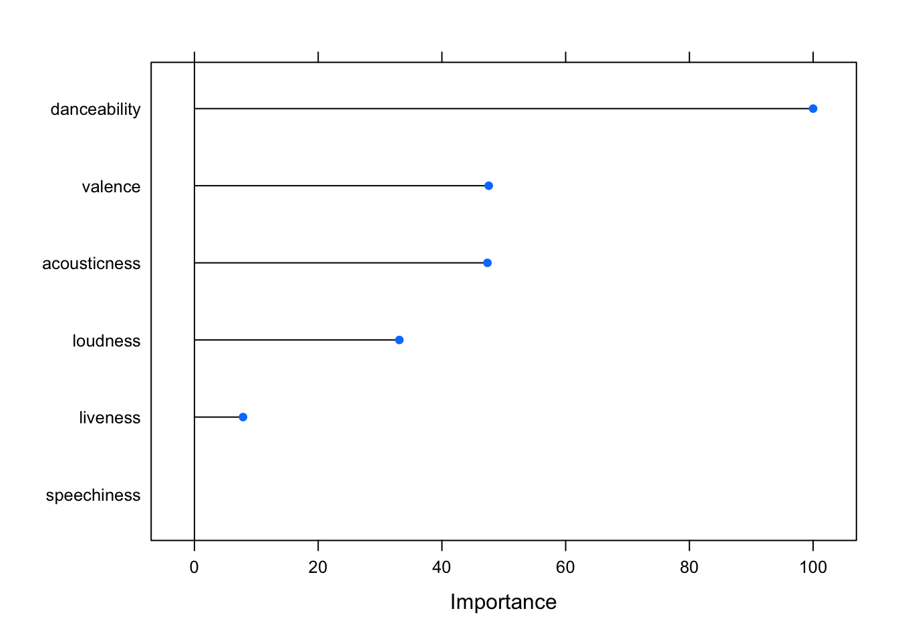

# complete_data <- read_csv(here("data", "attribution_data_new.csv", na.strings=c("","NA", header=T)))
complete_data <- read.csv("../data/attribution_data_new.csv", na.strings=c("","NA"), header=T)
complete_data <- complete_data[,-62]Week 7: Classifying
This Week’s Plan
- Look at running a principal components analysis for authorship
- Work on some models for classifying data
- Discuss how we might evaluate our models
This week, we will start by moving from clustering to PCA, or pricinpal components analysis. PCA is often seen as a way of reducing the dimensions of features, and here we will explore what it looks like when exploring questions of authorship.
We will follow this by looking at what it means to train a classifier, and some of the research questions we might ask of a classifier.
Getting Started
We will be using a of libraries today:
PCA and Authorship
PCAs are often used for reducing dimensions when we have lots of variables but a model might be better suited from combining those variables. PCAs have also been used a fair bit to explore questions of authorship. Here we have a question of authorship using symbolic data taken from scores. We are trying to explore the music of Josquin.
Here we load the data in:
Jesse Rodin’s Josquin Research Project has given levels of security for attribution, including pieces that we know are Josquin’s, those we think might be, and those which are more questionable.
# Josquin attribution level 1 and palestrina
josquin <- complete_data[complete_data$Composer == 'Josquin des Prez',-12]
josquin_secure <- josquin[josquin$Attribution.Level <= 2 ,]
josquin_secure$Composer <- as.character(josquin_secure$Composer)
josquin_less_secure <- josquin[ josquin$Attribution.Level >= 3,]
####Other composers
bach <- complete_data[complete_data$Composer == "Bach_Johann Sebastian",-12]
larue <- complete_data[complete_data$Composer == "la Rue_Pierre de",-12]
palestrina <- complete_data[complete_data$Composer == "Palestrina_Giovanni Perluigi da",-12]
ockeghem <- complete_data[complete_data$Composer == "Johannes Ockeghem",-12]
orto <- complete_data[complete_data$Composer == "de Orto_Marbrianus",-12]
dufay <- complete_data[complete_data$Composer == "Du Fay_Guillaume",-12]
josquin_bach <- rbind(josquin_secure, bach)
josquin_palestrina <- rbind(josquin_secure, palestrina)
josquin_larue <- rbind(josquin_secure, larue)
comparison <- rbind(josquin_secure, dufay)columns_wanted <- c(5:11)
Matrix <- comparison[,columns_wanted]
Matrix <- as.matrix(Matrix)
Matrix[is.na(Matrix)] <- 0
# log.pieces <- log(Matrix)
log.pieces <- log(Matrix)
composer <- comparison[,1]This code runs the actual principal components analysis.
It also provides a scree plot, allowing us to see which components are the most heavily weighted. This can allow us to reduce the dimensions as we see fit.
####principle component analysis.
pieces.pca <- prcomp(Matrix,
center = TRUE,
scale. = TRUE)
plot(pieces.pca, type = "l", main="Principal Components Analysis")
It’s worth taking some time to explore what each of these components actually means and how they’re weighted. PCA is weighting instances of parallel motion and similar motion pretty heavily, but negatively weighting pitch entropy and oblique motion. PC2 seems to be looking at nPVI and 9-8 suspensions.
print(pieces.pca)Standard deviations (1, .., p=7):
[1] 1.3651251 1.1932956 1.0473249 0.9758057 0.8158066 0.7627338 0.6450502
Rotation (n x k) = (7 x 7):
PC1 PC2 PC3 PC4 PC5
nPVI_Entire -0.1534310 0.28077115 -0.77204065 0.00852347 0.47773321
Nine_Eight -0.1018707 0.59859586 0.02341681 0.52670532 -0.12881933
pitch_correlation -0.1550940 0.39505005 0.02896214 -0.83452001 -0.15900704
pitch_entropy -0.1600989 0.50110624 0.56438102 0.04875023 0.32761392
parallel_motion 0.4600560 0.38613864 -0.26230330 -0.01533229 -0.49612767
similar_motion 0.6300842 0.05699415 0.06600453 0.03642203 -0.03731014
oblique_motion -0.5547412 -0.05768156 -0.10430981 0.14881862 -0.61239508
PC6 PC7
nPVI_Entire -0.2145105 -0.16511611
Nine_Eight 0.5736302 -0.08770651
pitch_correlation 0.2642076 -0.16592149
pitch_entropy -0.5428772 0.01765806
parallel_motion -0.3378146 0.45819860
similar_motion -0.1086246 -0.76214894
oblique_motion -0.3667346 -0.38260361As we can see, about 65% of the variance is accounted for with the first two principal components:
summary(pieces.pca)Importance of components:
PC1 PC2 PC3 PC4 PC5 PC6 PC7
Standard deviation 1.3651 1.1933 1.0473 0.9758 0.81581 0.76273 0.64505
Proportion of Variance 0.2662 0.2034 0.1567 0.1360 0.09508 0.08311 0.05944
Cumulative Proportion 0.2662 0.4697 0.6263 0.7624 0.85745 0.94056 1.00000Plotting our two composers with the first two principal components.
g <- ggbiplot(pieces.pca, obs.scale = 1, var.scale = 1,
groups = composer, ellipse = TRUE,
circle = TRUE)
g <- g + scale_color_discrete(name = '')
g <- g + theme(legend.direction = 'horizontal',
legend.position = 'top') +
theme_bw()
print(g)# we can change the number of components
# seven_component_model <- data.frame(pieces.pca$x[,1:8])We can also look at how much each of these features is being weighted within the first two components.
theta <- seq(0,2*pi,length.out = 100)
circle <- data.frame(x = cos(theta), y = sin(theta))
p <- ggplot(circle,aes(x,y)) + geom_path()
loadings <- data.frame(pieces.pca$rotation,
.names = row.names(pieces.pca$rotation))
p + geom_text(data=loadings,
mapping=aes(x = PC1, y = PC2, label = .names, colour = .names)) +
coord_fixed(ratio=1) +
labs(x = "PC1", y = "PC2") +
theme_bw()
Classifiers
A classifier is a model that assigns a label to data based on the input. There are many types of classifiers, and we will be evaluating various models throughout the week. Our goal will be to train a model on the features generally associated with a category, and then test the accuracy of that model. For now, a good starting point might be our Christmas Song question from last week.
Returning to our Christmas Song Problem
First, let’s get the data and add a column that tells us whether it’s a Christmas song or not
### get the data and add yes/no column.
christmas <- get_playlist_audio_features("", "5OP7itTh52BMfZS1DJrdlv")
christmas$christmas <- "yes"
not <- get_playlist_audio_features("", "6i2Qd6OpeRBAzxfscNXeWp")
not$christmas <- "no"
## combine the two datasets and get the columns we want to use.
christmas_subset <-rbind(christmas, not)
christmas_subset <- christmas_subset |>
select(c("christmas", "acousticness", "liveness", "danceability", "loudness", "speechiness", "valence"))Now we can use the createDataPartition function from the caret library to create a testing and a training dataset. Here, I’ve chosen a 70/30 partition of training and testing, but you can adjust as you see fit.
Train <- createDataPartition(christmas_subset$christmas, p=0.7, list=FALSE)
training <- christmas_subset[ Train, ]
testing <- christmas_subset[ -Train, ]We can pretty easily implement something like a neural network, using our training dataset to train it:
mod_fit <- caret::train(christmas ~ .,
data=training, method="nnet", importance = "christmas")Once we’ve trained this model, we can test it on our testing dataset, and see how well it does:
pred <- predict(mod_fit, testing)
confusionMatrix(pred, as.factor(testing$christmas), positive = "yes")Confusion Matrix and Statistics
Reference
Prediction no yes
no 20 14
yes 15 16
Accuracy : 0.5538
95% CI : (0.4253, 0.6773)
No Information Rate : 0.5385
P-Value [Acc > NIR] : 0.4518
Kappa : 0.1045
Mcnemar's Test P-Value : 1.0000
Sensitivity : 0.5333
Specificity : 0.5714
Pos Pred Value : 0.5161
Neg Pred Value : 0.5882
Prevalence : 0.4615
Detection Rate : 0.2462
Detection Prevalence : 0.4769
Balanced Accuracy : 0.5524
'Positive' Class : yes
So what does this all mean? Let’s define some terms.
- Accuracy:
- the accuracy rate. Just how many things it got right.
- 95% CI:
- the confidence interval of the accuracy.
- No information rate:
- given no more information other than the overall distribution, how likely are you to be correct if you just pick the “majority class.”
- if you have an accuracy rate of 80%, but the majority class is 80%, then your model isn’t terribly useful.
- P-Value:
- likelihood of chance.
- Kappa:
- measures the agreement between two raters and ratings. Here it’s looking at the difference between observed accuracy and random chance given the distribution in the dataset.
- McNemar’s Test P-Value:
- this is looking at the two distributions (from a 2x2 table), and determines if they are significantly different,
- Sensitivity:
- given that a result is actually a thing, what is the probability that our model will predict that event’s results?
- Specificity:
- given that a result is not actually a thing, what is the probability that our model will predict that?
- Pos Predictive Value:
- the probability that a predicted ‘positive’ class is actually positive.
- Neg Predictive Value:
- the probability that a predicted ‘negative’ class is actually negative.
- Prevalence:
- the prevalence of the ‘positive event’
- Detection Rate:
- the rate of true events also predicted to be events
- Detection Prevalence
- the prevalence of predicted events
- Balanced Accuracy:
- the average of the proportion corrects of each class individually
What is the model using?
We can look at which features the model is using…
plot(varImp(mod_fit))
Exercise
- Use PCA to explore the works of two artists. How well do they “separate”?
- Run a classifier on two groups (it can be the same two artists, or two distinct groups). How well does your model do?
Today we are going to look at different models and evaluating models. Our research question will be training a model to decipher John Lennon songs from Paul McCartney songs with various classifiers.
John or Paul?
Our research process will follow a simple trajectory:
- Get songs by each artist’s solo career (this can be our ‘ground truth’, as it were).
- Train the model on these pieces, and evaluate the various models.
- Apply the various models to some songs by the Beatles.
Getting the Data
john <- get_artist_audio_features('john lennon')
paul <- get_artist_audio_features('paul mccartney')
both <- rbind(john, paul)What is the balance of pieces like? It looks like we have far more McCartney than Lennon pieces. What does this mean for our model?
table(both$artist_name)
John Lennon Paul McCartney
584 984 We then can grab only the features that we want to explore for this model.
both_subset <- both |> select(c("artist_name", "acousticness", "liveness", "danceability", "loudness", "speechiness", "valence"))Before running a clustering, PCA, or a classifier such as a k-nearest neighbor, it’s probably good to standardize your data. This means that the data is consistent, and prevents wide ranges from dominating the results. Here we’ve scaled all of our data with the z-score of the data according with the rest of the data for that category.
I’ve also (temporarily) split the data from the artist, and then brought it all back together with cbind.
data <- both_subset[,-1]
artists <- both_subset[,1]
data <- data %>% mutate_all(~(scale(.) %>% as.vector))
both_artists <- cbind(artists, data)Cross-Validation
Cross-validation splits the data up into a testing and training set, and evaluates it.
K-folds cross validation:
K refers to the number of groups that data is split into.
- It randomizes the data
- splits it into the specified number of groups
- for each group, split into a training and testing set, and then evaluate
ctrl <- trainControl(method = "repeatedcv", number = 2, savePredictions = TRUE)Train <- createDataPartition(both_artists$artists, p=0.7, list=FALSE)
training <- both_artists[ Train, ]
testing <- both_artists[ -Train, ]Let’s look at our results with a logistic regression:
mod_fit <- train(artists ~ ., data=both_artists, method="glm", family="binomial",
trControl = ctrl, tuneLength = 10)
testing$artists <- as.factor(testing$artists)
pred <- predict(mod_fit, newdata=testing)
confusionMatrix(data=pred, testing$artists)Confusion Matrix and Statistics
Reference
Prediction John Lennon Paul McCartney
John Lennon 75 48
Paul McCartney 100 247
Accuracy : 0.6851
95% CI : (0.641, 0.7269)
No Information Rate : 0.6277
P-Value [Acc > NIR] : 0.00533
Kappa : 0.283
Mcnemar's Test P-Value : 2.763e-05
Sensitivity : 0.4286
Specificity : 0.8373
Pos Pred Value : 0.6098
Neg Pred Value : 0.7118
Prevalence : 0.3723
Detection Rate : 0.1596
Detection Prevalence : 0.2617
Balanced Accuracy : 0.6329
'Positive' Class : John Lennon
It looks like the accuracy is about 76%, but pay attention to the sensitivity and the specificity values.
Recall that sensitivity is a measurement of how well the model can detect a “positive” instance, and specificity measures how well the model is finding true negatives.
Sensitivity can be defined as follows:
Sensitivity = (True Positive)/(True Positive + False Negative)
and specificity can be defined as follows:
Specificity = (True Negative)/(True Negative + False Positive)
So this model is quite good at finding the negative class (here defined as McCartney), but not great at finding the positive class (Lennon).
Other Models
Let’s run the same code again, but now with a k-nearest neighbor. For our sanity, let’s put it into a function.
model_evaluation <- function(method){
Train <- createDataPartition(both_artists$artists, p=0.7, list=FALSE)
training <- both_artists[ Train, ]
testing <- both_artists[ -Train, ]
mod_fit <- train(artists ~ .,
data=training, method=method)
pred <- predict(mod_fit, newdata=testing)
accuracy <- table(pred, testing[,"artists"])
sum(diag(accuracy))/sum(accuracy)
testing$artists <- as.factor(testing$artists)
confusionMatrix(data=pred, testing$artists)
}
model_evaluation("kknn")Confusion Matrix and Statistics
Reference
Prediction John Lennon Paul McCartney
John Lennon 114 68
Paul McCartney 61 227
Accuracy : 0.7255
95% CI : (0.6828, 0.7654)
No Information Rate : 0.6277
P-Value [Acc > NIR] : 4.645e-06
Kappa : 0.4175
Mcnemar's Test P-Value : 0.5973
Sensitivity : 0.6514
Specificity : 0.7695
Pos Pred Value : 0.6264
Neg Pred Value : 0.7882
Prevalence : 0.3723
Detection Rate : 0.2426
Detection Prevalence : 0.3872
Balanced Accuracy : 0.7105
'Positive' Class : John Lennon
Note that it performs quite well! It’s better at finding the “John Lennon” model.
Why do we think this model performed better? A comparison of models can be found here.
Neural Net
A neural net doesn’t seem to do as well.
model_evaluation("nnet")Comparing Models
- Logistic Regression
- K-nearest neighbor
- neural net
- Learning Vector Quantization
- gradient boosted machine
- support vector machine
We can train different models explicitly (without a function) for now.
set.seed(1234)
control <- trainControl(method="repeatedcv", number=10, repeats=3)
# train logistic regression
modelglm <- train(artists ~ ., data=both_artists, method="glm", trControl=control)
# train knn
modelknn <- train(artists ~ ., data=both_artists, method="kknn", trControl=control)
# train nnet
modelnnet <- train(artists ~ ., data=both_artists, method="nnet", trControl=control)
# train the LVQ model
modelLvq <- train(artists ~ ., data=both_artists, method="lvq", trControl=control)
# train the GBM model
set.seed(7)
modelGbm <- train(artists ~ ., data=both_artists, method="gbm", trControl=control)
# train the SVM model
set.seed(7)
modelSvm <- train(artists ~., data=both_artists, method="svmRadial", trControl=control)
# train the random forest
randomforest <- train(artists~., data=both_artists, method="ranger", trControl=control)We can actually look at the resampling of the dataset for each model, and get the results for each model:
# collect resamples
results <- resamples(list(LVQ=modelLvq, GBM=modelGbm, SVM=modelSvm,knn=modelknn, nnet=modelnnet, glm=modelglm, rf=randomforest))
# summarize the distributions
summary(results)
Call:
summary.resamples(object = results)
Models: LVQ, GBM, SVM, knn, nnet, glm, rf
Number of resamples: 30
Accuracy
Min. 1st Qu. Median Mean 3rd Qu. Max. NA's
LVQ 0.6050955 0.6415973 0.6602564 0.6600220 0.6751592 0.7133758 0
GBM 0.6962025 0.7439980 0.7619124 0.7663809 0.7878695 0.8397436 0
SVM 0.6687898 0.7179487 0.7388535 0.7387526 0.7687306 0.8012821 0
knn 0.7324841 0.7647041 0.7809603 0.7832078 0.8012821 0.8333333 0
nnet 0.6794872 0.7208987 0.7324841 0.7363845 0.7527715 0.8076923 0
glm 0.6089744 0.6634820 0.6858974 0.6862284 0.7099359 0.7594937 0
rf 0.7388535 0.8028602 0.8210844 0.8237734 0.8450584 0.9050633 0
Kappa
Min. 1st Qu. Median Mean 3rd Qu. Max. NA's
LVQ 0.08665105 0.1683163 0.2101309 0.2206380 0.2633926 0.3847244 0
GBM 0.32297804 0.4362291 0.4827239 0.4877173 0.5394920 0.6557203 0
SVM 0.27879859 0.3771507 0.4167157 0.4276538 0.4885911 0.5730932 0
knn 0.42590980 0.4981390 0.5401244 0.5399265 0.5824790 0.6505858 0
nnet 0.29398986 0.3882580 0.4259220 0.4245391 0.4615117 0.5824411 0
glm 0.07503888 0.2320983 0.2821086 0.2882337 0.3352471 0.4441770 0
rf 0.44522968 0.5735189 0.6111771 0.6168420 0.6640556 0.7935900 0It might be better to look at the accuracy for each model. Here we have the accuracy rating as well as Cohen’s Kappa, which is like accuracy but also incorporates the imbalance of the dataset.
# boxplots of results
bwplot(results)
Here’s another plot:
# dot plots of results
dotplot(results)
Is it possible to use this for a research question??
What if we use our neural net model but on a different dataset? How about the beatles dataset that is available on Spotify (which admittedly isn’t as much as we’d like).
Grabbing Beatles Data
We can start by getting the data from Spotify:
beatles <- get_artist_audio_features('the beatles')
beatles_subset <- beatles |> select(c("artist_name", "acousticness", "energy", "instrumentalness", "liveness", "danceability", "loudness", "speechiness", "valence"))Predicting
Now we can use the models that we’ve trained, but on new data. Here we use the k-nearest neighbor models.
beatles_knn <- predict(modelknn, newdata=beatles_subset)
beatles_nnet <- predict(modelnnet, newdata=beatles_subset)
beatles_glm <- predict(modelglm, newdata=beatles_subset)
beatles_svm <- predict(modelSvm, newdata=beatles_subset) Now, we are going to create a data frame of the track name, and the results from the model.
classified_data <- as.data.frame(cbind(beatles_knn, beatles_nnet, beatles_glm, beatles_svm, beatles$track_name))(Note that this table doesn’t seem to be rendering correctly when pushed online).
Summary
What I like about this is that we can take something about authorship that we know, and then use it to explore authorship of things that are a little more ambiguous. It can also teach us a fair bit about the specific models. Why do we think some performed so much better than others?
Exercise:
Let’s try to build an east/west coast rap classifier (an outdated concept, I know):
Here are some important steps for us to go through as we think about training a classifier:
- Grab data
- partition and train model
- compare models
- use it to predict a new dataset.
Let’s grab the data.
Here I’m going to grab two playlists, one about “East coast” rap, and the other about “West coast”.
east_coast <- get_playlist_audio_features("", "3pu8tsqTW52aUtYFZN3g4A")
east_coast$coast <- "east"
west_coast <- get_playlist_audio_features("", "6lAOSVxxvGuEhPtZguaeav")
west_coast$coast <- "west"
both <- rbind(east_coast, west_coast)
####standardize and clean a bitNow I’m going to grab the features that are important to me. Here it’s the “coast” variable, followed by the standard “global features” that the Spotify API provides.
both <- both %>% select(c("coast", "acousticness", "energy", "instrumentalness", "liveness", "danceability", "loudness", "speechiness", "valence"))
data <- both[,-1]
coast <- both[,1]
data <- data %>% mutate_all(~(scale(.) %>% as.vector))
both <- cbind(coast, data)Here we can run a k-folds cross-validation:
Here, the data is split into 10 subsets (or folds), and trains on k-1 of the folds (here 9), and tested on 1 of them. Then it repeats it a few times. In this case, 3.
set.seed(1234)
control <- trainControl(method="repeatedcv", number=10, repeats=3)Here we can run the cross-validation with different types of classifiers and plot the results.
# train logistic regression
modelglm <- train(coast ~ ., data=both, method="glm", trControl=control)
# train knn
modelknn <- train(coast ~ ., data=both, method="kknn", trControl=control)
# train nnet
modelnnet <- train(coast ~ ., data=both, method="nnet", trControl=control)
# train the LVQ model
modelLvq <- train(coast ~ ., data=both, method="lvq", trControl=control)
# train the GBM model
modelGbm <- train(coast ~ ., data=both, method="gbm", trControl=control)
# train the SVM model
modelSvm <- train(coast ~., data=both, method="svmRadial", trControl=control)
# train the random forest
randomforest <- train(coast~., data=both, method="ranger", trControl=control)
# collect resamples
results <- resamples(list(LVQ=modelLvq, GBM=modelGbm, SVM=modelSvm,knn=modelknn, nnet=modelnnet, glm=modelglm, rf=randomforest))
# summarize the distributions
summary(results)
bwplot(results)
Now we can test our model on a dataset from outside of our initial training/testing stage:
kendrick_data <- get_artist_audio_features('kendrick lamar')
kendrick <- kendrick_data |> select(c("acousticness", "energy", "instrumentalness", "liveness", "danceability", "loudness", "speechiness", "valence"))
kendrick <- kendrick %>% mutate_all(~(scale(.) %>% as.vector))
kendrick_rf <- predict(randomforest, newdata=kendrick)
kendrick_knn <- predict(modelknn, newdata=kendrick)
kendrick_nnet <- predict(modelnnet, newdata=kendrick)
table(kendrick_rf)kendrick_rf
east west
107 35 classified_data <- as.data.frame(cbind(kendrick_rf, kendrick_knn, kendrick_nnet, kendrick_data$track_name))
classified_data$kendrick_knn <- if_else(classified_data$kendrick_knn == 2, "West", "East")
classified_data$kendrick_rf <- if_else(classified_data$kendrick_rf == 2, "West", "East")
classified_data$kendrick_nnet <- if_else(classified_data$kendrick_nnet == 2, "West", "East")
classified_data$track_name <- kendrick$track_name
classified_data |> datatable(filter ="top") Please note that this is a totally ridiculous classifier for Kendrick Lamar, but hopefully it demonstrates some possible techniques.
What would be a better research question?